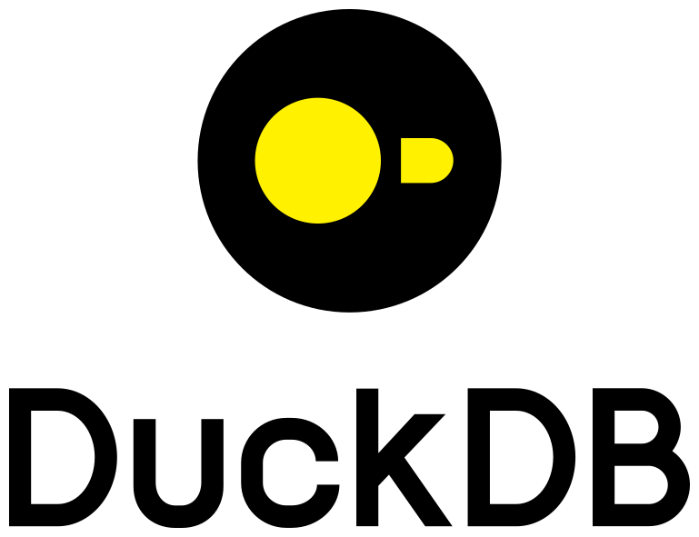

Stream a dbplyr table on DuckDB into Arrow
Source:R/to_arrow_stream.R
to_arrow_stream.Rd![[Experimental]](figures/lifecycle-experimental.svg)
to_arrow_stream() is a streaming counterpart of arrow::to_arrow()
for dbplyr tables on a DuckDB connection.
It sends the query with DBI::dbGetQueryArrow()
and hands the stream to arrow::as_record_batch_reader(),
so the rows arrive batch by batch and the result is not held twice.
arrow::to_arrow() materializes the whole result first,
through dbSendQuery(arrow = TRUE).
The streaming comes with hard limits, listed in the handbook, in
usage/integrations/.
Use to_arrow_stream() where a large result goes straight into Arrow
and nothing else runs on its connection until the reader has been read
to the end.
Where that cannot be arranged, use arrow::to_arrow(),
or run everything else on a second connection.
Examples
con <- dbConnect(duckdb())
#> duckdb is storing downloaded extensions and secrets under ~/.duckdb:
#> ℹ /home/runner/.duckdb
#> This persists across sessions and is shared with the DuckDB CLI and other clients.
#> ℹ Run duckdb(shared_home = FALSE) to use a temporary directory instead.
#> ℹ See ?duckdb_storage for details and alternatives.
dbWriteTable(con, "mtcars", mtcars)
# Read the reader to the end before anything else runs on `con`.
reader <- to_arrow_stream(dplyr::filter(dplyr::tbl(con, "mtcars"), cyl == 4))
as.data.frame(reader$read_table())
#> mpg cyl disp hp drat wt qsec vs am gear carb
#> 1 22.8 4 108.0 93 3.85 2.320 18.61 1 1 4 1
#> 2 24.4 4 146.7 62 3.69 3.190 20.00 1 0 4 2
#> 3 22.8 4 140.8 95 3.92 3.150 22.90 1 0 4 2
#> 4 32.4 4 78.7 66 4.08 2.200 19.47 1 1 4 1
#> 5 30.4 4 75.7 52 4.93 1.615 18.52 1 1 4 2
#> 6 33.9 4 71.1 65 4.22 1.835 19.90 1 1 4 1
#> 7 21.5 4 120.1 97 3.70 2.465 20.01 1 0 3 1
#> 8 27.3 4 79.0 66 4.08 1.935 18.90 1 1 4 1
#> 9 26.0 4 120.3 91 4.43 2.140 16.70 0 1 5 2
#> 10 30.4 4 95.1 113 3.77 1.513 16.90 1 1 5 2
#> 11 21.4 4 121.0 109 4.11 2.780 18.60 1 1 4 2
# Another statement on `con` breaks a reader that has not been read yet.
reader <- to_arrow_stream(dplyr::tbl(con, "mtcars"))
dbGetQuery(con, "SELECT 1")
#> 1
#> 1 1
try(reader$read_table())
#> Error : Invalid: Invalid Input Error: The query result was invalidated by another statement on its connection before it was read to the end. Read it to the end first, or run the other statement on a separate connection.
# A second connection to the same database leaves the reader alone.
other <- dbConnect(con@driver)
reader <- to_arrow_stream(dplyr::tbl(con, "mtcars"))
dbGetQuery(other, "SELECT count(*) FROM mtcars")
#> count_star()
#> 1 32
reader$read_table()$num_rows
#> [1] 32
dbDisconnect(other)
dbDisconnect(con)